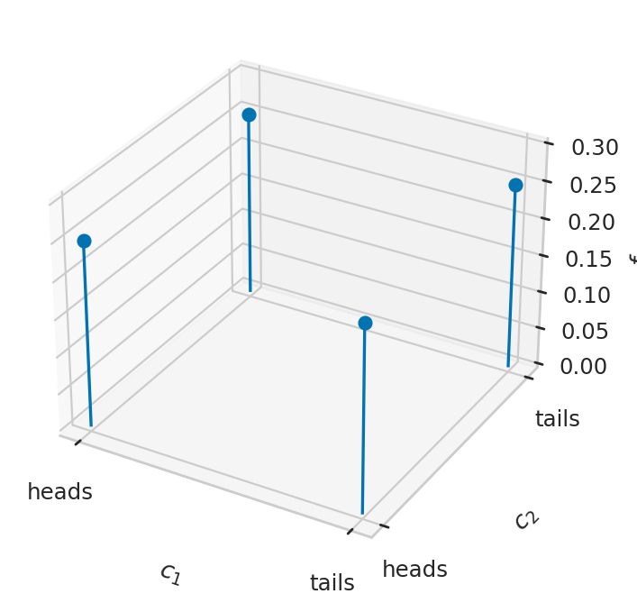
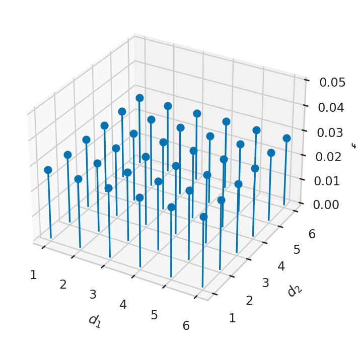
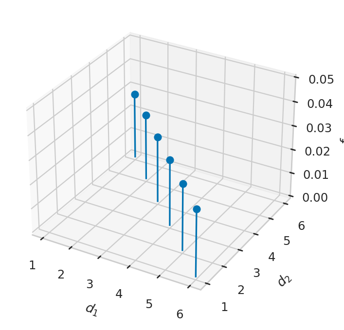
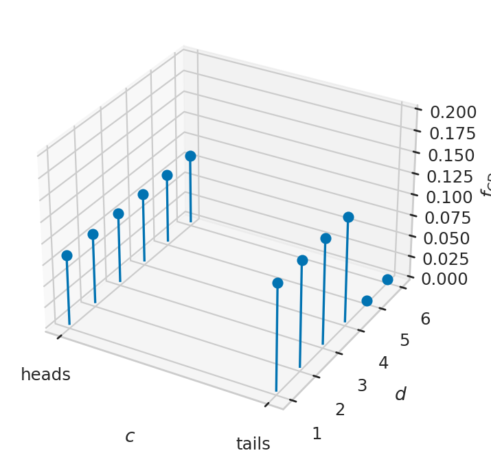
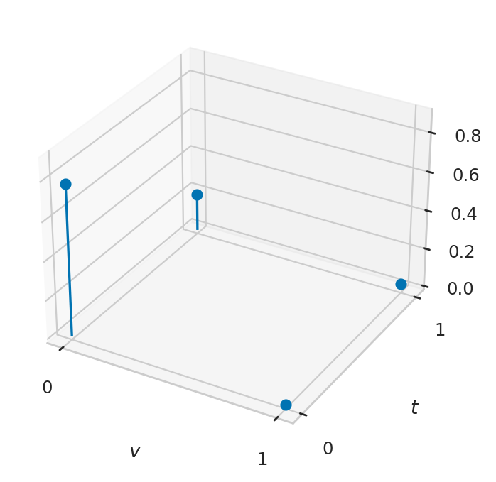

Section 2.2 — Multiple random variable
Contents
Section 2.2 — Multiple random variable#
This notebook contains all the code examples from Section 2.2 Multiple random variables in the No Bullshit Guide to Statistics.
Notebook setup#
# load Python modules
import numpy as np # numerical calculations
import matplotlib.pyplot as plt # generic plotting functions
import seaborn as sns # plotting distributions
# Figures setup
sns.set_theme(
context="paper",
style="whitegrid",
palette="colorblind",
rc={'figure.figsize': (7,4)},
)
%config InlineBackend.figure_format = 'retina'
# set random seed for repeatability
np.random.seed(42)
Definitions#
Example 1: two coin tosses#
def fC(c):
if c in {"heads", "tails"}:
return 1/2
else:
return 0
def fC1C2(c1,c2):
return fC(c1)*fC(c2)
xs, ys, fXYs = [], [], []
map_int_to_label = {0: "heads", 1: "tails"}
for x in range(0,1+1):
for y in range(0,1+1):
xs.append(x)
ys.append(y)
fXYxy = fC1C2(map_int_to_label[x], map_int_to_label[y])
fXYs.append(fXYxy)
fig, ax = plt.subplots(subplot_kw=dict(projection='3d'))
ax.stem(xs, ys, fXYs, basefmt=" ")
ax.set_xticks([0,1])
ax.set_xticklabels(["heads", "tails"])
ax.set_yticks([0,1])
ax.set_yticklabels(["heads", "tails"])
ax.set_xlabel("$c_1$")
ax.set_ylabel("$c_2$")
ax.set_zlabel("$f_{C_1C_2}$")
ax.set_zlim([0, 0.3])
(0.0, 0.3)

Example 2: rolling two dice#
def fD(d):
if d in {1,2,3,4,5,6}:
return 1/6
else:
return 0
def fD1D2(d1,d2):
return fD(d1)*fD(d2)
xs, ys, fXYs = [], [], []
for x in range(1,6+1):
for y in range(1,6+1):
xs.append(x)
ys.append(y)
fXYxy = fD1D2(x,y)
fXYs.append(fXYxy)
fig, ax = plt.subplots(subplot_kw=dict(projection='3d'))
ax.stem(xs, ys, fXYs, basefmt=" ")
ax.set_xlabel("$d_1$")
ax.set_ylabel("$d_2$")
ax.set_zlabel("$f_{D_1D_2}$")
ax.set_zlim([0, 0.05])
(0.0, 0.05)

# PLOT D_1 + D_2 = 7
xs, ys, fXYs = [], [], []
for x in range(1,6+1):
y = 7 - x
xs.append(x)
ys.append(y)
fXYxy = fD1D2(x,y)
fXYs.append(fXYxy)
fig, ax = plt.subplots(subplot_kw=dict(projection='3d'))
ax.stem(xs, ys, fXYs, basefmt=" ")
ax.set_xlabel("$d_1$")
ax.set_ylabel("$d_2$")
ax.set_zlabel("$f_{D_1D_2}$")
ax.set_zlim([0, 0.05])
(0.0, 0.05)

Example 3: coin-dependent dice roll#
def fC(c):
if c in {"heads", "tails"}:
return 1/2
else:
return 0
def fD(d):
if d in {1,2,3,4,5,6}:
return 1/6
else:
return 0
def fD4(d):
if d in {1,2,3,4}:
return 1/4
else:
return 0
def fCD(c,d):
if c == "heads":
return fC(c)*fD(d)
elif c == "tails":
return fC(c)*fD4(d)
xs, ys, fXYs = [], [], []
map_int_to_label = {0: "heads", 1: "tails"}
for x in range(0,1+1):
for y in range(1,6+1):
xs.append(x)
ys.append(y)
fXYxy = fCD(map_int_to_label[x],y)
fXYs.append(fXYxy)
fig, ax = plt.subplots(subplot_kw=dict(projection='3d'))
ax.stem(xs, ys, fXYs, basefmt=" ")
ax.set_xticks([0,1])
ax.set_xticklabels(["heads", "tails"])
ax.set_xlabel("$c$")
ax.set_ylabel("$d$")
ax.set_zlabel("$f_{CD}$")
ax.set_zlim([0, 0.2])
(0.0, 0.2)

fXYs
[0.08333333333333333,
0.08333333333333333,
0.08333333333333333,
0.08333333333333333,
0.08333333333333333,
0.08333333333333333,
0.125,
0.125,
0.125,
0.125,
0.0,
0.0]
sum(fXYs)
1.0
# f_{Y|X}(y|heads) [as a list]
[fCD("heads",d) for d in range(1,6+1)]
[0.08333333333333333,
0.08333333333333333,
0.08333333333333333,
0.08333333333333333,
0.08333333333333333,
0.08333333333333333]
# f_{Y|X}(y|tails) [as a list]
[fCD("tails",d) for d in range(1,6+1)]
[0.125, 0.125, 0.125, 0.125, 0.0, 0.0]
# f_Y(y) [as a list]
fYs = [fCD("heads",d)+fCD("tails",d) for d in range(1,6+1)]
fYs
[0.20833333333333331,
0.20833333333333331,
0.20833333333333331,
0.20833333333333331,
0.08333333333333333,
0.08333333333333333]
# # ALT. compute f_{Y|X}(y|heads)*0.5 + f_{Y|X}(y|tails)*0.5
# fYs = [fD(d)*0.5+fD4(d)*0.5 for d in range(1,6+1)]
# fYs
sum(fYs)
1.0
Example 4: diagnostic test#
def fV(v):
if v == 1:
return 0.03
elif v == 0:
return 0.97
def fTgivenV1(t):
if t == 1:
return 0.90
elif t == 0:
return 0.10
def fTgivenV0(t):
if t == 1:
return 0.20
elif t == 0:
return 0.80
def fTgivenV(t,v):
if v == 1:
return fTgivenV1(t)
elif v == 0:
return fTgivenV0(t)
def fVT(v,t):
return fV(v)*fTgivenV(t,v)
vs, ts, fVTs = [], [], []
for v in range(0,1+1):
for t in range(0,1+1):
vs.append(v)
ts.append(t)
fVTvt = fVT(v,t)
fVTs.append(fVTvt)
fig, ax = plt.subplots(subplot_kw=dict(projection='3d'))
ax.stem(vs, ts, fVTs, basefmt=" ", bottom=0.0)
ax.set_xticks([0,1])
ax.set_xlabel("$v$")
ax.set_yticks([0,1])
ax.set_ylabel("$t$")
ax.set_zlabel("$f_{VT}$")
ax.set_zlim([0, 0.9])
(0.0, 0.9)

# f_T(0) =
0.8* 0.97 + 0.10 *.03
0.779
# f_T(1) =
0.2* 0.97 + 0.90 *.03
0.221
for t in range(0,1+1):
fVTt = fVT(0,t) + fVT(1,t)
print("Pr({T="+str(t)+"}) =", fVTt)
Pr({T=0}) = 0.779
Pr({T=1}) = 0.221
for v in range(0,1+1):
for t in range(0,1+1):
fVTvt = fVT(v,t)
print("Pr({V="+str(v) + ",T="+str(t)+"}) =",
fTgivenV(t,v), "*", fV(v), "=", fVTvt)
Pr({V=0,T=0}) = 0.8 * 0.97 = 0.776
Pr({V=0,T=1}) = 0.2 * 0.97 = 0.194
Pr({V=1,T=0}) = 0.1 * 0.03 = 0.003
Pr({V=1,T=1}) = 0.9 * 0.03 = 0.027
Example 4: diagnostic test (continued)#
We’re now interested in \(f_{V|T}(v|t)\), which we can obtain using Bayes’ theorem.
\[
f_{V|T}(v|t)
= \frac{ f_{T|V}(t|v) f_V(v) }{ f_{T|V}(t|0) f_V(0) + f_{T|V}(t|1) f_V(1)}.
\]
We’ll now define the function fVgivenT that computes the numerator
and denominator in this fraction,
and returns the ratio.
def fVgivenT(v,t):
num = fTgivenV(t,v) * fV(v)
denom = fTgivenV(t,0) * fV(0) + fTgivenV(t,1) * fV(1)
return num/denom
The probability of the patient having the virus \(f_{V|T}(1|t=1)\), given they tested positive is:
fVgivenT(1,1)
0.12217194570135746
Intuitively, this percentage is measuring the ratio of the probability of the outcome \(f_{VT}(1,1)\) divided by sum of the probabilities of all outcomes where positive test can occur: \(f_{VT}(1,1)+f_{VT}(0,1)\).
fVT(1,1) / (fVT(0,1) + fVT(1,1))
0.12217194570135746
Define datasets for the examples#
Example 1: Multivariable uniform#
xmin = 100
xmax = 200
ymin = 10
ymax = 20
# joint pdf of = randint(100, 200) x randint(10,20)
def fU(x,y):
A = (xmax-xmin) * (ymax-ymin)
if xmin <= x and x <= xmax and ymin <= y and y <= ymax:
return 1/A
else:
return 0.0
fU(170,12)
0.001